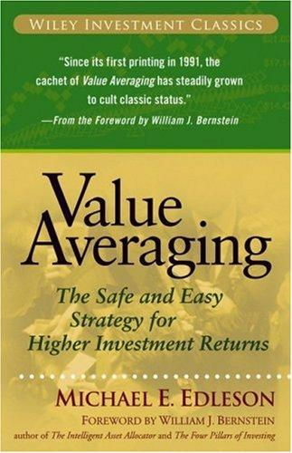

迈克尔·埃德尔森（Michael E. Edleson）在麻省理工学院（MIT）获得博士学位，1990年至1996年在哈佛商学院担任金融学助理教授。他还曾在西点军校任教，在纳斯达克/NASD担任首席经济学家和高级副总裁，后在摩根士丹利担任董事总经理，负责全球股票风险管理。"价值平均法"这一概念最初源于他1988年发表的一篇学术论文，因反响热烈而扩展成书，于1991年由国际出版公司首次出版。2006年，约翰·威利出版社将其收入"威利投资经典"系列重新发行，由威廉·伯恩斯坦（William Bernstein）撰写新版前言。中文版《价值平均策略：获得高投资收益的安全简便方法》由上海财经大学出版社2008年出版，顾安翻译。
价值平均法（Value Averaging, VA）是对广为人知的定额定投法（Dollar-Cost Averaging, DCA）的升级改良。定额定投是在固定时间间隔投入固定金额，不考虑市场状况；价值平均法则更进一步——投资者设定投资组合每期应增长的目标金额（例如每月增长2000元）。当市场下跌时，投资组合价值低于目标，投资者需要追加更多资金补足差额；当市场大幅上涨时，组合价值超过目标，投资者少投甚至卖出部分份额使组合回到目标轨道上。这种机制在本质上迫使投资者"低买高卖"——市场便宜时自动买入更多，市场昂贵时自动买入更少甚至卖出，从而获得比定额定投更低的平均买入成本和更高的长期回报。全书系统讲解了增长的数学原理、市场风险与择时问题、定额定投与价值平均法的具体操作机制、税务考量和实施指南，并提供了投资者可以直接使用的详细表格和公式。
伯恩斯坦在前言中称价值平均法为"加了兴奋剂的定额定投"（dollar cost averaging on steroids），并在其"高效前沿"推荐书单中评价本书为"将一笔资金分散部署到多种资产中极其有用的实操指南"。范德堡大学金融学教授威廉·克里斯蒂（William G. Christie）则表示："埃德尔森博士的书确实是一部需要传承的经典。我花了大量职业生涯试图反驳价值平均法，但没有成功。我是一个信徒。"
《价值平均策略》的独特价值在于它提供了一套可以立即执行的、有理论支撑的投资操作系统。对于那些认同纪律化投资、希望用一种简单但经过优化的方法将资金持续投入市场的投资者而言，这本书是定额定投之外最值得了解的替代方案。